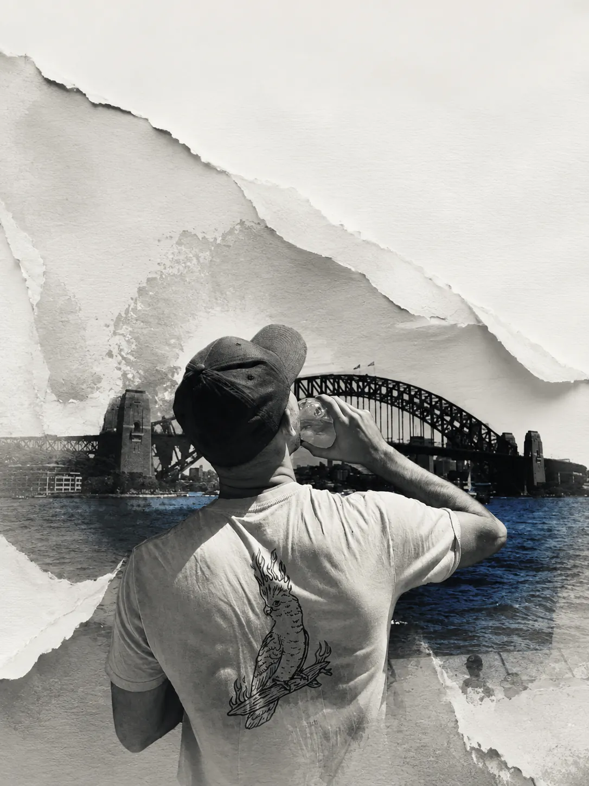

Alex Bethune.

Data engineering & Python development.
Self-taught developer based in Melbourne, focused on data engineering and Python. I build reproducible pipelines and analytical models, with data quality checks and tested recovery paths.
Selected work
View all projectsDevPulse Data Platform
Python, SQL, DuckDB, dbt, ClickHouse
Built batch and streaming pipelines for public GitHub activity. A local reference run processed 2.5 million events; 99 Python tests passed. Code not publicly released.
Commerce CDC
Python, SQL, SQLite, SCD Type 2
Built a replayable warehouse with customer history, deletes and late-change repair. Nine tests cover replay, rollback and reconciliation. Public source and synthetic demo.
NYC Taxi Data Engineering
Python, SQL, DuckDB, dbt
Built an auditable warehouse from 5.97 million source trips. Published 5.90 million in-scope trips; 14 dbt tests and eight quality checks passed. Code not publicly released.
Experience
- CFC Team Member Woolworths
- Melbourne · 2026–present
- Data Entry Fujifilm
- Melbourne · 2026–present
- Junior Data Analyst
- Remote · 2024–2025
- Turned Dune data into charts using Python.
- Self-employed Arbitrager
- Barcelona · 2024–2025
- Private Tutor English & Mathematics
- Barcelona · 2018–2023
- Indoor Soccer Coach F.C. Grévol BCN
- 2016 and 2018–2019
- Team Member KFC
- Melbourne · 2017
Education
- Data Analyst Dataquest
- 2022–2023
- Universitat Autònoma de Barcelona
- 2018–2021
- High School Jesuïtes Clot
- 2014–2016
Additional training
- Indoor Soccer Coach Certification · CEEB, Barcelona, 2014
- Responsible Alcohol Service · Melbourne, 2016
- “Coffee Art” Barista Course · Melbourne, 2016